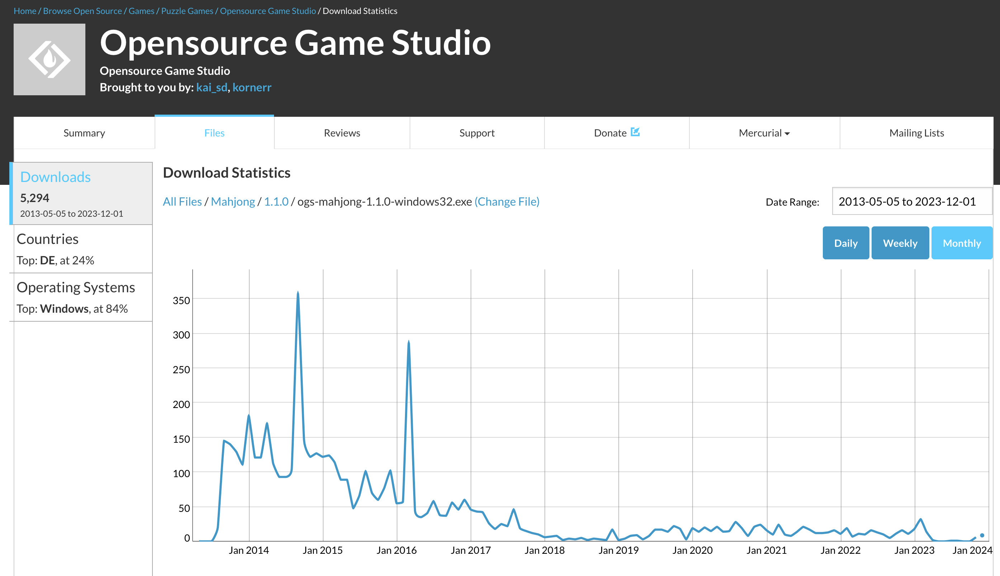

2023-12-25 00:00
В далёком 2005-м году проект Opensource Game Studio начался под названием Opensource RPG, т.к. целью было создание «первой открытой конкуретноспособной бесплатной игры». В чуть менее далёком 2011-м после выпуска OGS Mahjong 0.7 мы уже подсчитывали, что для создания РПГ в одиночку потребуется 540 лет.
В том 2011-м у нас теплилась надежда об увеличении команды, что могло бы уменьшить этот срок. Однако, сегодня в конце 2023-го очевидно, что создать РПГ в одиночку невозможно.
В 2013-м году вышел OGS Mahjong 1.1, последний на сегодняшний день готовый продукт в рамках проекта Opensource Game Studio. Как ни странно, OGS Mahjong до сих пор проявляет признаки к жизни, хотя график скачивания к текущему времени уже больше похож на предсмертные судороги:

Недавно мы проверяли запуск OGS Mahjong 1.1 под Linux. К сожалению, прямо из распакованного архива запустить игру не удалось. Но несколько симлинков к обновлённым версиям библиотек исправили дело. Т.е. достаточно было немного настроить окружение без пересборки игры, и всё заработало. Это хороший результат для ПО возрастом 10 лет.
В 2019-м году мы создали собственный генератор статических сайтов ПСКОВ, чтобы иметь возможность как оформлять статьи в удобном формате Markdown, так и проверить гипотезу долговечности веб-приложений. Сегодня спустя 4 года ясно, что гипотеза полностью подтвердилась. Уверены, ПСКОВ образца 2019-го года по-прежнему будет работать без единого изменения в 2029-м, но придётся подождать ещё 6 лет.
Примеры OGS Mahjong и ПСКОВа показывают, что долговечность в 4-10 лет не фантастика. Долговечность критически важна для хобби-проектов, т.к. у любителя нет возможности поспевать за меняющимися требованиями в Операционных Системах. Шаг долговечности в проекте Opensource Game Studio достигнут.
Следующий шаг - это портируемый код. Под этим термином мы подразумеваем такой код, который на ~80% является технически идентичным для всех популярных ныне платформ: Android, iOS, Linux, macOS, Web, Windows.
Портируемость критически важна для хобби-проектов, т.к. у любителя нет возможности проверять каждое изменение на всех платформах регулярно. Именно портируемостью кода мы и займёмся в ближайшие годы. Оттачивать её будем и на OGS Mahjong, и на ПСКОВе.
Будет интересно и познавательно.
PS: А ещё мы добавили комментарии на сайте с помощью Disqus. Ставьте лайки ;)